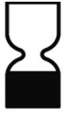
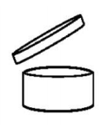

A 246/2013. (VII. 2.) Korm. rendelet a kozmetikai termékekről az Európai Parlament 1223/2009/EK rendeletével együtt ad szabályokat a kozmetikai termékekre Magyarországon.
A rendelet külön foglakozik a kozmetikai termékek címkézésével, megerősíti az EK rendeletében előírtakat azzal a kikötéssel, hogy a rendeletben említett tájékoztatón bizonyos információkat magyar nyelven kell feltüntetni.
A címkén magyarul kell feltüntetni:
- A csomagolás idején fennálló névleges tartalmat súlyban vagy töltési térfogatban, kivéve az öt grammnál vagy öt milliliternél kevesebbet, ingyenes mintákat és egyszeri felhasználásra szánt csomagokat
tartalmazó csomagolásokat; az előre csomagolt áruk esetében, amelyeket általában több tételként adnak el, és amelyek vonatkozásában a súly vagy a töltési térfogat nem jelentős, nem kell megadni a tartalmat, feltéve,
hogy a tételek száma látszik a csomagoláson. Ezt az információt nem kell megadni, amennyiben a tételek száma kívülről könnyen megállapítható, vagy a terméket általában darabonként értékesítik;
- Az időpont, ameddig a kozmetikai termék megfelelő feltételek mellett tárolva megfelel eredeti rendeletetésének, és különösen megfelel a 3. cikk előírásainak (a továbbiakban: "minőségmegőrzési idő")
Az időpontot vagy a csomagoláson feltüntetett egyéb részleteket megelőzi az alább megadott szimbólum vagy a "felhasználható" szó.

A minőségmegőrzési időt egyértelműen kell megadni, és annak vagy hónapból és évből, vagy napból, hónapból és évből kell állnia, ebben a sorrendben. Amennyiben szükséges, ezt az információt a megjelölt minőségmegőrzés
biztosításához szükséges tárolási körülmények egészítik ki.
- A minőségmegőrzési idő megjelölése nem kötelező a 30 hónapot meghaladó minőségmegőrzési idejű kozmetikai termékek esetében. E termékeknél megjelölik azt a – felnyitástól számított – időtartamot, amely alatt a termék biztonságos
és a fogyasztóra nézve káros következmény nélkül használható. Ezt az információt a alább megadott szimbólum jelöli, amelyet az időtartam (hónapokban és/vagy években) követ, kivéve, ha a felnyitástól
számított minőségmegőrzési idő fogalma nem releváns;

- A felhasználásra vonatkozó különleges óvintézkedések, kozmetikai termékekre vonatkozó különleges óvintézkedésekre vonatkozó információ;
- A kozmetikai termék rendeltetése, kivéve, ha az egyértelműen kiderül annak megjelenéséből;
Amennyiben gyakorlati okoknál fogva nem lehetséges az előírásoknak megfelelően feltüntetni a felhasználásra vonatkozó különleges óvintézkedések és az összetevők felsorolását,
a címkén az alábbiak alkalmazandók:
- az információt a termékhez mellékelt vagy csatolt tájékoztatón, címkén, szalagon vagy kártyán kell feltüntetni;
- hacsak gyakrolati okokból nem megvalósítható, ezekre az információkra rövidített formájú információs leírással vagy megadott szimbólummal kell utalni, amelynek szerepelnie kell az
a felhasználásra vonatkozó különleges óvintézkedések esetében a tárolóedényen vagy a csomagoláson az összetevők felsorolása pedig a csomagoláson.
Szappan, fürdőgolyók vagy egyéb kisméretű termékek esetében, ahol gyakorlati okok miatt nem megoldható, hogy az említett információkat a mellékelt tájékoztatón, címkén, szalagon vagy kártyán tüntessék fel,
ezeket az információkat az értékesítésre szánt tároló közvetlen közelében található tájékoztatón kell feltüntetni.
A nem előre csomagolt kozmetikai termékek, valamint azon termékek esetében, amelyeket a vevő kérésére a vásárláskor csomagolnak be, vagy azonnali eladásra előre csomagolnak, a tagállamok határozzák meg a
megjelölt információk jelölésének részletes szabályait.